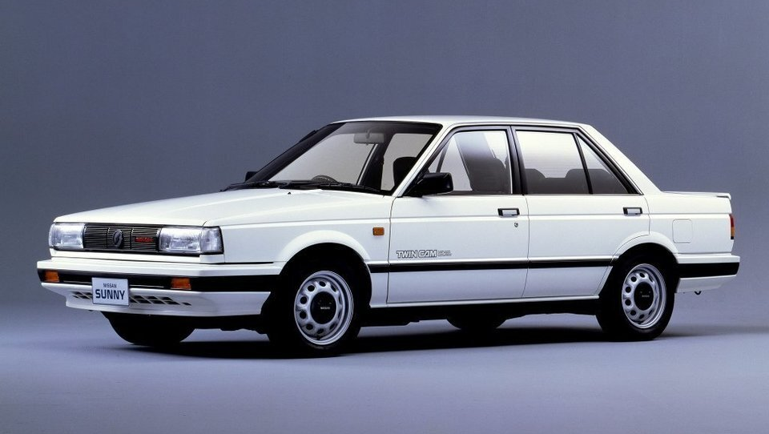
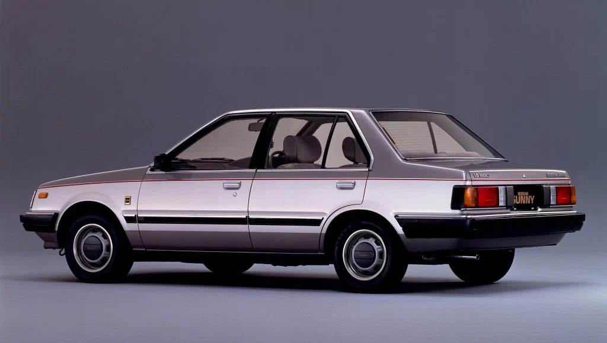
Тип двигателя: бензиновый;
Объем двигателя: 1.3 - 1.5 л;
Мощьность: 60 - 75 л.с.;
Nissan Sunny B11 1982-1987гг.
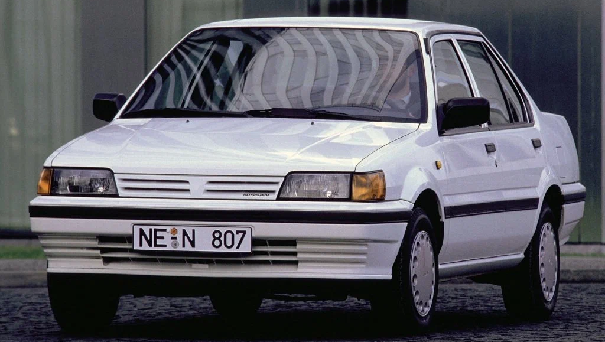
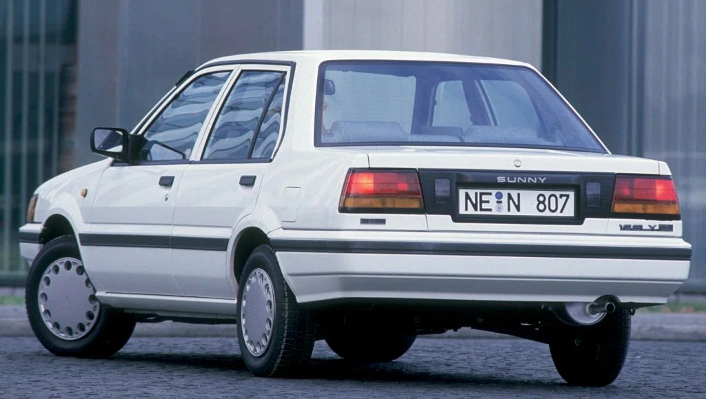
Тип двигателя: бензиновый;
Объем двигателя: 1.3 - 1.6 л;
Мощьность: 60 - 94 л.с.;
Nissan Sunny N13 1986-1991гг.
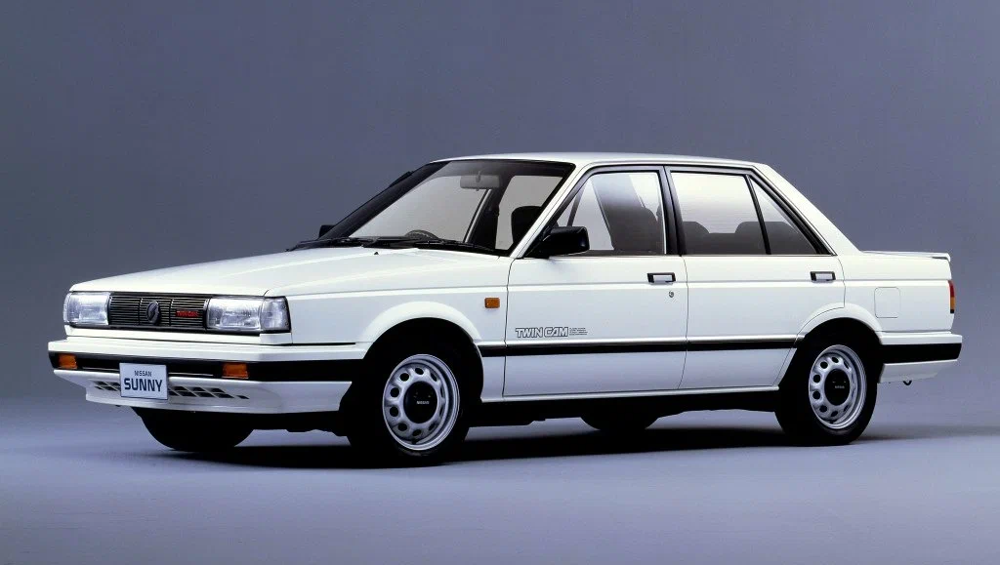
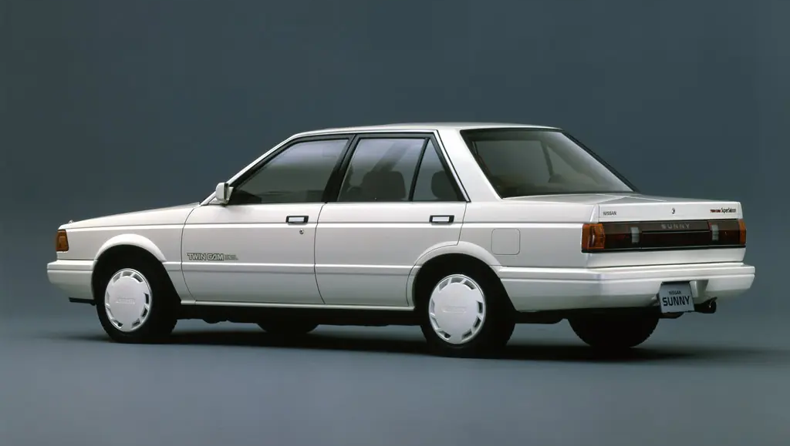
Тип двигателя: бензиновый;
Объем: 1.3 - 1.6 л;
Мощьность: 67 - 90 л.с.;
Nissan Sunny B12 1986-1991гг.
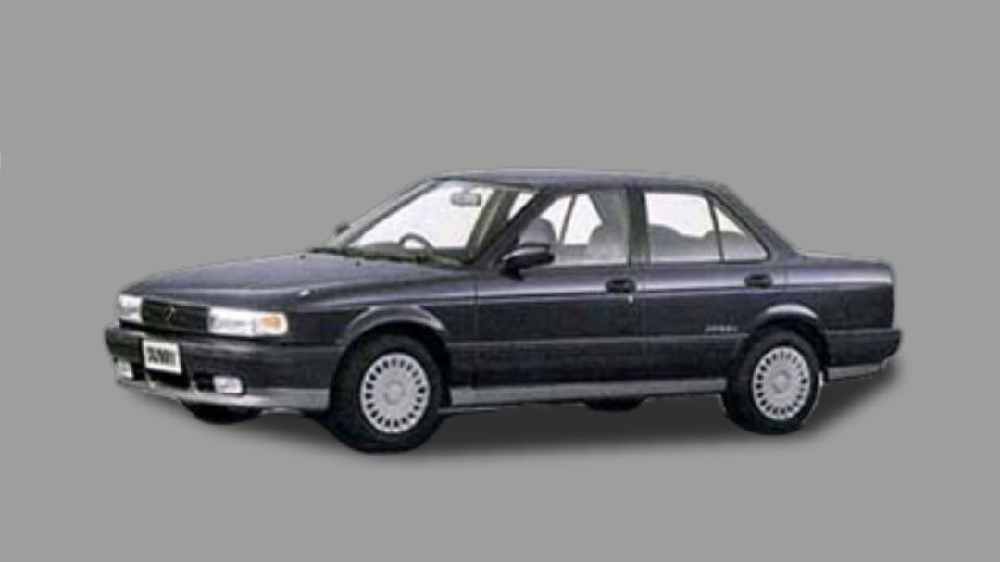
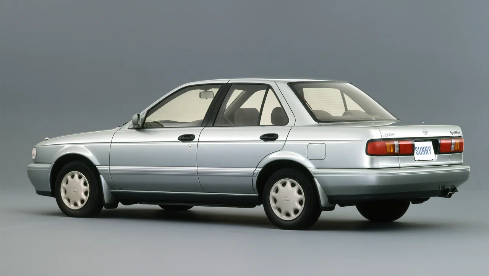
Тип двигателя: бензиновый;
Объем: 1.3 - 1.8 л;
Мощьность: 79 - 140 л.с.;
Nissan Sunny B13 1990-1993гг.
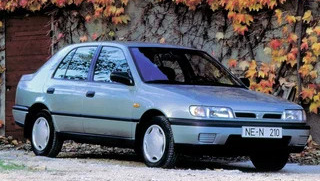
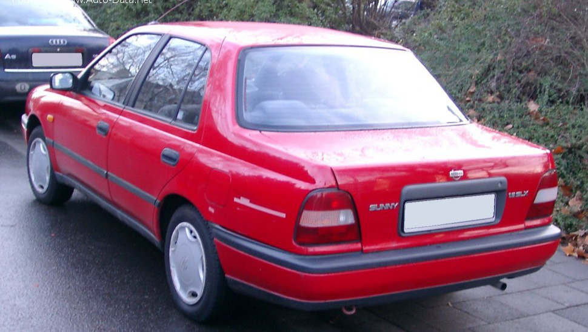
Тип двигателя: бензиновый;
Объем: 1.4 - 2.0 л;
Мощьность: 75 - 143 л.с.;
Nissan Sunny N14 1990-1995гг.
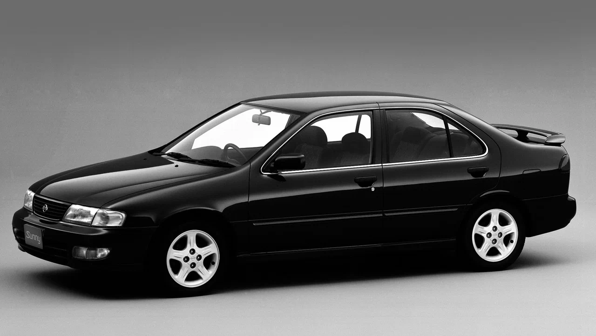
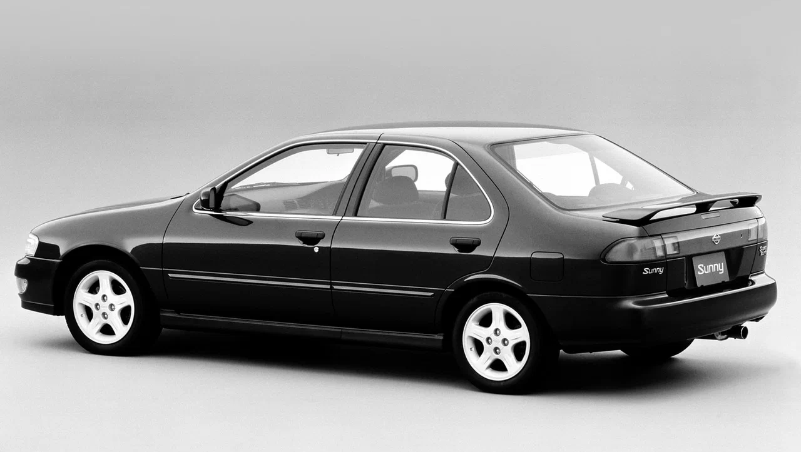
Тип двигателя: бензиновый;
Объем: 1.3 - 1.8 л;
Мощьность: 85 - 140 л.с.;
Nissan Sunny B14 1993-1999гг.
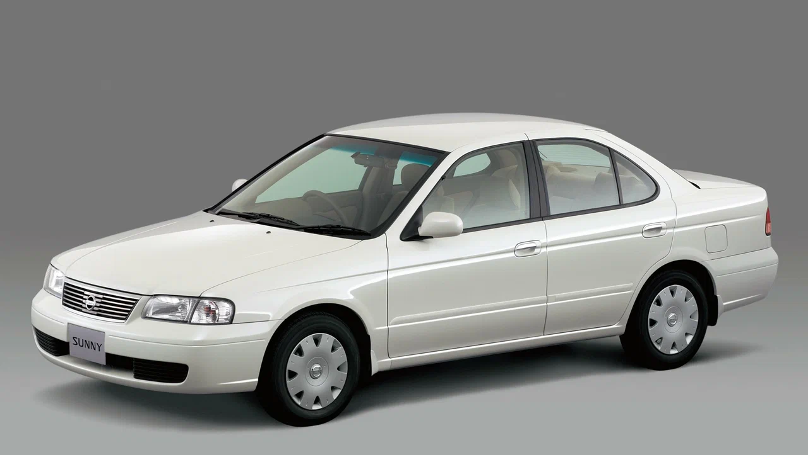
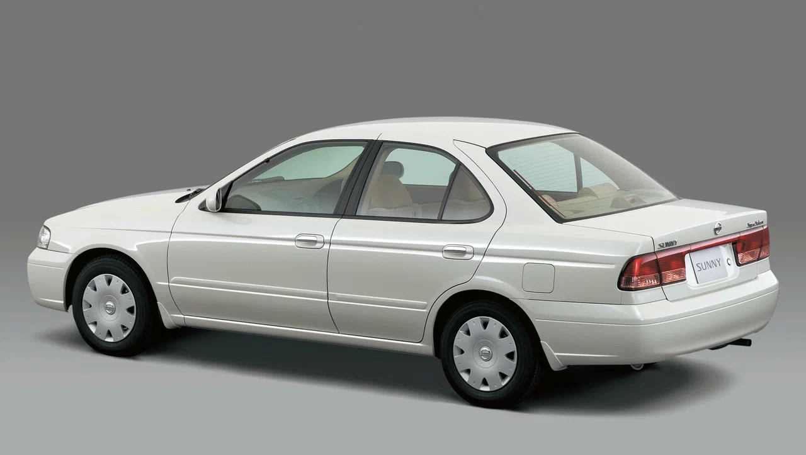
Тип двигателя: бензиновый;
Объем: 1.3 - 1.8 л;
Мощьность: 87 - 130 л.с.;
Nissan Sunny B15 1998-2004гг.

Тип двигателя: бензиновый;
Объем: 1.5 - 1.8 л;
Мощьность: 90 - 120 л.с.;
Nissan Sunny N16 2000-2005гг.
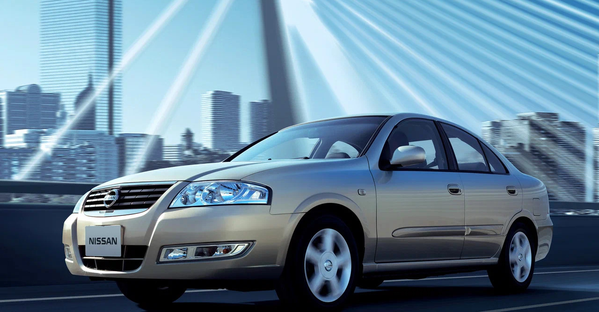
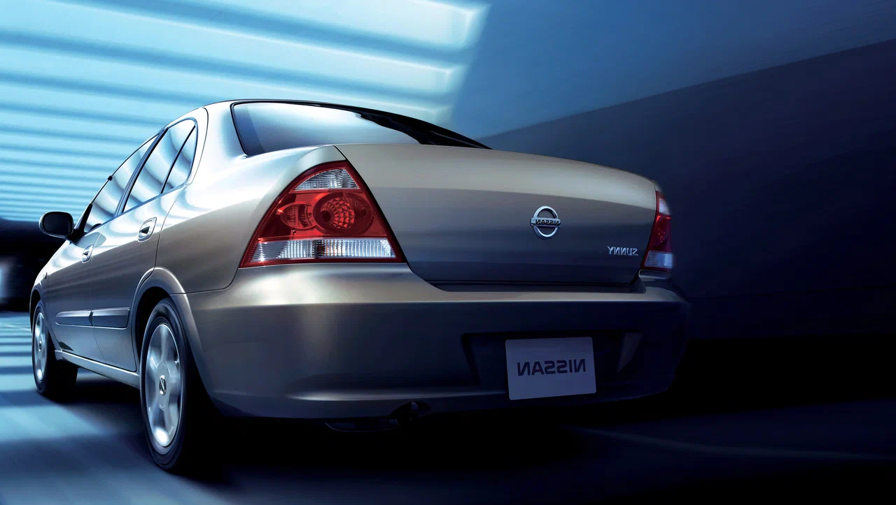
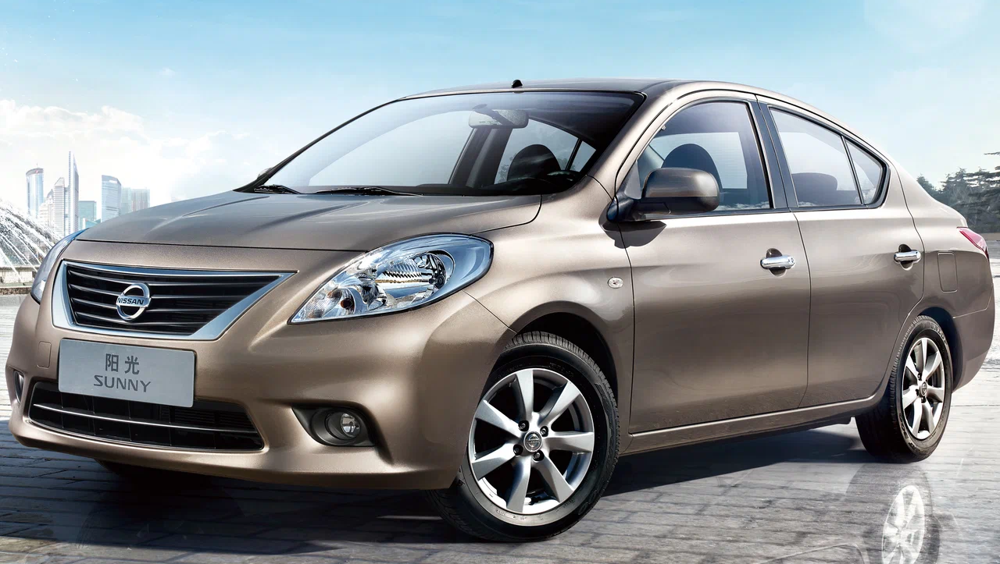